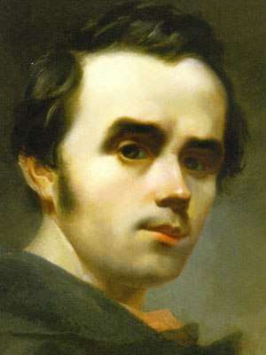

Taras Shevchenko
Outstanding Ukrainian writer

" Dr. Norman Borlaug, second from left, trains biologists in Mexico on how to increase wheat yields - part of his life-long war on hunger. "
The writer devoted his life and work to the struggle for the rights and freedom of the Ukrainian people"
-- Indian Prime Minister Manmohan Singh--